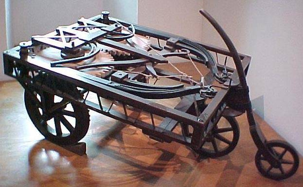

Car-magazine
Автомоби́ль (от др.-греч. αὐτός — сам и лат. mobilis — подвижной, скорый) — моторное дорожное транспортное средство, используемое для перевозки людей или грузов. Основное назначение автомобиля заключается в совершении транспортной работы. Автомобильный транспорт в промышленно развитых странах занимает ведущее место по сравнению с другими видами транспорта по объёму перевозок пассажиров. Современный автомобиль состоит из 15—20 тысяч деталей, из которых 150—300 являются наиболее важными и требующими наибольших затрат в эксплуатации.
История

Первые известные чертёжи автомобиля (с пружинным приводом) принадлежат Леонардо да Винчи, однако ни действующего экземпляра, ни сведений о его существовании до наших дней не дошло. В 2004 году эксперты Музея истории науки из Флоренции смогли восстановить по чертежам этот автомобиль, доказав тем самым правильность идеи Леонардо. В эпоху Возрождения и позже в ряде европейских стран «самодвижущиеся» тележки и экипажи с пружинным двигателем строились в единичных количествах для участия в маскарадах и парадах.
В 1769 году французский изобретатель Кюньо испытал первый образец машины с паровым двигателем, известный как «малая телега Кюньо», а в 1770 году — «большую телегу Кюньо». Сам изобретатель назвал её «Огненная телега» — она предназначалась для буксировки артиллерийских орудий.
«Тележку Кюньо» считают предшественницей не только автомобиля, но и паровоза, поскольку она приводилась в движение силой пара. В XIX веке дилижансы на паровой тяге и рутьеры (паровые тягачи, то есть безрельсовые паровозы) для обычных дорог строились в Англии, Франции и применялись в ряде европейских стран, включая Россию, однако они были тяжёлыми, прожорливыми и неудобными, поэтому широкого распространения не получили.
Были отдельные случаи построения легковых автомобилей как предметов роскоши. Так, в историю вошёл La Marquise (официальное название — De Dion-Bouton et Trepardoux), построенный в 1884 году и работавший на паровой тяге.
Появление лёгкого, компактного и достаточно мощного двигателя внутреннего сгорания открыло широкие возможности для развития автомобиля. В 1885 году немецкий изобретатель Готтлиб Даймлер, а в 1886 году его соотечественник Карл Бенц изготовили и запатентовали первые самодвижущиеся экипажи с бензиновыми двигателями. В 1895 году Бенц изготовил первый автобус с ДВС. В 1896 году Даймлер изготовил первое такси и грузовик. В последнем десятилетии XIX века в Германии, Франции и Англии зародилась автомобильная промышленность.
В первой четверти XX века широкое распространение получили электромобили и автомобили с паровой машиной. В 1900 году примерно половина автомобилей в США была на паровом ходу, в 1910-х в Нью-Йорке в такси работало до 70 тыс. электромобилей.
В том же 1900 году Фердинанд Порше сконструировал электромобиль с четырьмя ведущими колёсами, в которых располагались приводящие их в движение электродвигатели. Через два года голландская фирма Spyker выпустила гоночный автомобиль с полным приводом, оснащённый межосевым дифференциалом.
Первый гоночный автомобиль был оснащён двигателем мощностью 35 л.с. и был доставлен Эмилю Еллинеку от DMG 22 декабря 1900 года. Этот «Мерседес» был разработан Вильгельмом Майбахом, главным инженером DMG, и включал инновационные конструкторские решения: длинную колёсную базу, широкую колею и низкий центр тяжести, стальную раму, сотовый радиатор и рулевое колесо. Лёгкий и высокопроизводительный двигатель достигал 75 км/ч и мог набирать от 300 до 1000 оборотов в минуту. В нём было 4 цилиндра и соотношение каждого цилиндра на ход поршня составлял 116×140 мм. Объём — 5918 см3. Для каждой пары цилиндров стоял свой карбюратор, два распределительных вала и контролируемые впускные клапана, низковольтное магнето зажигания.
Братья Стэнли производили около 1000 автомобилей в год. В 1909 году братья открыли первую в Колорадо гостиницу люкс-класса и от железнодорожной станции до гостиницы гостей возил паровой автобус, что стало фактическим началом автомобильного туризма. Фирма Stanley выпускала автомобили на паровом ходу до 1927 года. Несмотря на ряд достоинств (хорошая тяга, многотопливность) паровые автомобили сошли со сцены к 1930-м годам из-за своей неэкономичности и сложностей при эксплуатации.
Немалый вклад в широкое распространение автомобильного транспорта внёс американский изобретатель и промышленник Генри Форд, с 1913 года внедривший конвейерную систему сборки автомобилей.
В 1923 году фирма Бенца изготовила первый грузовой автомобиль с двигателем Дизеля.